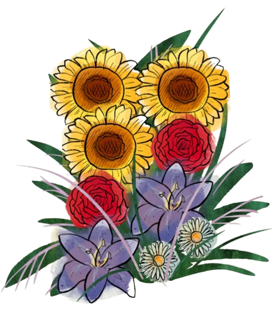

pick a sunflower
Reasons I love you 🌻
I wanted to leave this bouquet here for you too. Pick a sunflower whenever you want a little reminder from me.
sunflower note
Click a sunflower to begin 🌼
Each one is holding a little piece of what I adore about you.
0 of 5 sunflowers picked